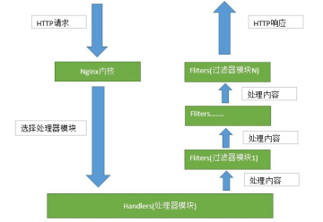
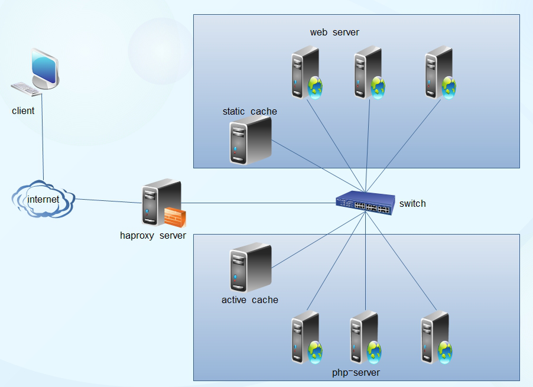

一般对负载均衡的使用是随着网站规模的提升根据不同的阶段来使用不同的技术。具体的应用需求还得具体分析，如果是中小型的Web应用，比如日PV小于1000万，用Nginx就完全可以了；如果机器不少，可以用DNS轮询，LVS所耗费的机器还是比较多的；大型网站或重要的服务，且服务器比较多时，可以考虑用LVS。
一种是通过硬件来进行进行，常见的硬件有比较昂贵的F5和Array等商用的负载均衡器，它的优点就是有专业的维护团队来对这些服务进行维护、缺点就是花销太大，所以对于规模较小的网络服务来说暂时还没有需要使用；另外一种就是类似于Nginx/LVS/HAProxy的基于Linux的开源免费的负载均衡软件，这些都是通过软件级别来实现，所以费用非常低廉。
目前关于网站架构一般比较合理流行的架构方案：Web前端采用Nginx/HAProxy+Keepalived作负载均衡器；后端采用MySQL数据库一主多从和读写分离，采用LVS+Keepalived的架构。当然要根据项目具体需求制定方案。
Nginx
nginx优点
- 工作在网络7层之上，可针对http应用做一些分流的策略，如针对域名、目录结构，它的正规规则比HAProxy更为强大和灵活，所以，目前为止广泛流行。
- Nginx对网络稳定性的依赖非常小，理论上能ping通就能进行负载功能。 这个也是它的优势之一；相反LVS对网络稳定性依赖比较大
- Nginx安装与配置比较简单，测试也比较方便，基本能把错误日志打印出来。 LVS的配置、测试就要花比较长的时间了
- 可以承担高负载压力且稳定，硬件不差的情况下一般能支撑几万次的并发量，负载度比LVS小。
- Nginx可以通过端口检测到服务器内部的故障，如根据服务器处理网页返回的状态码、超时等，并会把返回错误的请求重新提交到另一个节点。
- 不仅仅是优秀的负载均衡器/反向代理软件，同时也是强大的Web应用服务器。LNMP也是近些年非常流行的Web架构，在高流量环境中稳定性也很好。
- 可作为中层反向代理使用。 这一层面Nginx基本上无对手，唯一可以对比Nginx的就只有lighttpd了，不过lighttpd目前还没有做到Nginx完全的功能，配置也不那么清晰易读，社区资料也远远没Nginx活跃。
- 可作为静态网页和图片服务器。
- Nginx社区活跃，第三方模块非常多，相关的资料在网上比比皆是。
- Nginx还能做Web服务器即Cache功能。
- Nginx常规的和HTTP请求和相应流程图：
- 
nginx缺点
- 适应范围较小，仅能支持http、https、Email协议
- 对后端服务器的健康检查，只支持通过端口来检测，不支持通过url来检测。不支持Session的直接保持，但能通过ip_hash来解决。
LVS
LVS：使用Linux内核集群实现一个高性能、高可用的负载均衡服务器，它具有很好的可伸缩性（Scalability)、可靠性（Reliability)和可管理性（Manageability)。
LVS优点
- 抗负载能力强、是工作在网络4层之上仅作分发之用，没有流量的产生，这个特点也决定了它在负载均衡软件里的性能最强的，对内存和cpu资源消耗比较低
- 配置性比较低，这是一个缺点也是一个优点，因为没有可太多配置的东西，所以并不需要太多接触，大大减少了人为出错的几率。
- 工作稳定，因为其本身抗负载能力很强，自身有完整的双机热备方案，如LVS+Keepalived，不过我们在项目实施中用得最多的还是LVS/DR+Keepalived。
- 无流量，LVS只分发请求， 具体的流量是由linux内核来处理，因此没有流量的产生。 而流量并不从它本身出去，这点保证了均衡器IO的性能不会收到大流量的影响。
- 应用范围比较广，因为LVS工作在4层，所以它几乎可以对所有应用做负载均衡，包括http、数据库、在线聊天室等等。
LVS缺点
- 软件本身不支持正则表达式处理，不能做动静分离；而现在许多网站在这方面都有较强的需求，这个是Nginx/HAProxy+Keepalived的优势所在。
- 如果是网站应用比较庞大的话，LVS/DR+Keepalived实施起来就比较复杂了，特别后面有Windows Server的机器的话，如果实施及配置还有维护过程就比较复杂了，相对而言，Nginx/HAProxy+Keepalived就简单多了
HAproxy
HAproxy的优点
HAProxy也是支持虚拟主机的。, 可以工作在4、7层(支持多网段)
HAProxy的优点能够补充Nginx的一些缺点，比如支持Session的保持，Cookie的引导；同时支持通过获取指定的url来检测后端服务器的状态。
HAProxy跟LVS类似，本身就只是一款负载均衡软件；单纯从效率上来讲HAProxy会比Nginx有更出色的负载均衡速度，在并发处理上也是优于Nginx的。
HAProxy支持TCP协议的负载均衡转发，可以对MySQL读进行负载均衡，对后端的MySQL节点进行检测和负载均衡，大家可以用LVS+Keepalived对MySQL主从做负载均衡。
HAProxy负载均衡策略非常多，HAProxy的负载均衡算法现在具体有如下8种：
① roundrobin，表示简单的轮询，这个不多说，这个是负载均衡基本都具备的；
② static-rr，表示根据权重，建议关注；
③ leastconn，表示最少连接者先处理，建议关注；
④ source，表示根据请求源IP，这个跟Nginx的IP_hash机制类似，我们用其作为解决session问题的一种方法，建议关注；
⑤ ri，表示根据请求的URI；
⑥ rl_param，表示根据请求的URl参数’balance url_param’ requires an URL parameter name；
⑦ hdr(name)，表示根据HTTP请求头来锁定每一次HTTP请求；
⑧ rdp-cookie(name)，表示根据据cookie(name)来锁定并哈希每一次TCP请求。
haproxy的工作模型图
- 
HAproxy的缺点
- 不支持POP/SMTP协议
- 不支持SPDY协议
- 不支持HTTP cache功能。现在不少开源的lb项目，都或多或少具备HTTP cache功能。
- 重载配置的功能需要重启进程，虽然也是soft restart，但没有Nginx的reaload更为平滑和友好
- 多进程模式支持不够好
Nginx和LVS对比的总结：
- Nginx工作在网络的7层，所以它可以针对http应用本身来做分流策略，比如针对域名、目录结构等，相比之下LVS并不具备这样的功能，所以Nginx单凭这点可利用的场合就远多于LVS了；但Nginx有用的这些功能使其可调整度要高于LVS，所以经常要去触碰触碰，触碰多了，人为出问题的几率也就会大。
- Nginx对网络稳定性的依赖较小，理论上只要ping得通，网页访问正常，Nginx就能连得通，这是Nginx的一大优势！Nginx同时还能区分内外网，如果是同时拥有内外网的节点，就相当于单机拥有了备份线路；LVS就比较依赖于网络环境，目前来看服务器在同一网段内并且LVS使用direct方式分流，效果较能得到保证。另外注意，LVS需要向托管商至少申请多一个ip来做Visual IP，貌似是不能用本身的IP来做VIP的。要做好LVS管理员，确实得跟进学习很多有关网络通信方面的知识，就不再是一个HTTP那么简单了。
- Nginx安装和配置比较简单，测试起来也很方便，因为它基本能把错误用日志打印出来。LVS的安装和配置、测试就要花比较长的时间了；LVS对网络依赖比较大，很多时候不能配置成功都是因为网络问题而不是配置问题，出了问题要解决也相应的会麻烦得多。
- Nginx也同样能承受很高负载且稳定，但负载度和稳定度差LVS还有几个等级：Nginx处理所有流量所以受限于机器IO和配置；本身的bug也还是难以避免的。
- Nginx可以检测到服务器内部的故障，比如根据服务器处理网页返回的状态码、超时等等，并且会把返回错误的请求重新提交到另一个节点。目前LVS中 ldirectd也能支持针对服务器内部的情况来监控，但LVS的原理使其不能重发请求。比如用户正在上传一个文件，而处理该上传的节点刚好在上传过程中出现故障，Nginx会把上传切到另一台服务器重新处理，而LVS就直接断掉了，如果是上传一个很大的文件或者很重要的文件的话，用户可能会因此而恼火。
- Nginx对请求的异步处理可以帮助节点服务器减轻负载，假如使用apache直接对外服务，那么出现很多的窄带链接时apache服务器将会占用大 量内存而不能释放，使用多一个Nginx做apache代理的话，这些窄带链接会被Nginx挡住，apache上就不会堆积过多的请求，这样就减少了相当多的资源占用。这点使用squid也有相同的作用，即使squid本身配置为不缓存，对apache还是有很大帮助的。
- Nginx能支持http、https和email（email的功能比较少用），LVS所支持的应用在这点上会比Nginx更多。在使用上，一般最前端所采取的策略应是LVS，也就是DNS的指向应为LVS均衡器，LVS的优点令它非常适合做这个任务。重要的ip地址，最好交由LVS托管，比如数据库的 ip、webservice服务器的ip等等，这些ip地址随着时间推移，使用面会越来越大，如果更换ip则故障会接踵而至。所以将这些重要ip交给 LVS托管是最为稳妥的，这样做的唯一缺点是需要的VIP数量会比较多。Nginx可作为LVS节点机器使用，一是可以利用Nginx的功能，二是可以利用Nginx的性能。当然这一层面也可以直接使用squid，squid的功能方面就比Nginx弱不少了，性能上也有所逊色于Nginx。Nginx也可作为中层代理使用，这一层面Nginx基本上无对手，唯一可以撼动Nginx的就只有lighttpd了，不过lighttpd目前还没有能做到 Nginx完全的功能，配置也不那么清晰易读。另外，中层代理的IP也是重要的，所以中层代理也拥有一个VIP和LVS是最完美的方案了。具体的应用还得具体分析，如果是比较小的网站（日PV小于1000万），用Nginx就完全可以了，如果机器也不少，可以用DNS轮询，LVS所耗费的机器还是比较多的；大型网站或者重要的服务，机器不发愁的时候，要多多考虑利用LVS。
补充
nginx的异步处理：
squid同步处理：
- 浏览器发起请求，而后请求会立刻被转到后端，于是在浏览器和> 后台之间就建立了一个通道。从请求发起直到请求完成，这条通道都是一直存在的。
nginx异步处理：
- 浏览器发起请求，请求不会立刻转到后端，而是请求数据(header)先收到nignx上，然后nginx再把这个请求发到后端，后端处理完成后把数据返回到nginx上，nginx将数据流发到浏览器。
异步处理的好处
- 假设用户执行一个上传文件操作，因为用户网速又比较慢，因此需要花半个小时才能把文件传到服务器。squid的同步代理在用户开始上传后就和后台建立了连接，半小时后文件上传结束，由此可见，后台服务器连接保持了半个小时；而nginx异步代理就是先将此文件收到nginx上，因此仅仅是nginx和用户保持了半小时连接，后台服务器在这半小时内没有为这个请求开启连接，半小时后用户上传结束，nginx才将上传内容发到后台，nginx和后台之间的带宽是很充裕的，所以只花了一秒钟就将请求发送到了后台，由此可见，后台服务器连接保持了一秒。同步传输花了后台服务器半个小时，异步传输只花一秒，可见优化程度很大。
- 在上面这个例子中，假如后台服务器因为种种原因重启了，上传文件就自然中断了，这对用户来说是非常恼火的一件事情，想必各位也有上传文件传到一半被中断的经历。用nginx代理之后，后台服务器的重启对用户上传的影响减少到了极点，而nginx是非常稳定的并不需要常去重启它，即使需要重启，利用kill-HUP就可以做到不间断重启nginx。
- 异步传输可以令负载均衡器更有保障，为什么这么说呢？在其它的均衡器（lvs/haproxy/apache等）里，每个请求都是只有一次机会的，假如用
户发起一个请求，结果该请求分到的后台服务器刚好挂掉了，那么这个请求就失败了；而nginx因为是异步的，所以这个请求可以重新发往下一个后台，下一个后台返回了正常的数据，于是这个请求就能成功了。还是用用户上传文件这个例子，假如不但用了nginx代理，而且用了负载均衡，nginx把上传文件发往其中一台后台，但这台服务器突然重启了，nginx收到错误后，会将这个上传文件发到另一台后台，于是用户就不用再花半小时上传一遍。 - 假如用户上传一个10GB大小的文件，而后台服务器没有考虑到这个情况，那么后台服务器岂不要崩溃了。用nginx就可以把这些东西都拦在nginx上，通过nginx的上传文件大小限制功能来限制，另外nginx性能非常有保障，就放心的让互联网上那些另类的用户和nginx对抗去吧。用异步传输会造成问题：后台服务器有提供上传进度的功能的话，用了nginx代理就无法取得进度，这个需要使用nginx的一个第三方模块来实现。
Nginx upstream支持的分配策略及原理：
- 轮询(默认)：每个请求按照顺序逐一分配到不同的后端服务器。如后端服务器down掉，就切换到另一台并剔除down的后端主机
- weight：指定轮询几率，weight和访问比率成正比，用于后端服务器性能不均的情况。
- ip_hash：每个请求按照访问ip的hash结果分配，不同ip的请求被分配到后端不同的
三大主流软件负载均衡器适用业务场景
- 网站建设初期，可以选用Nginx、HAProxy作为反向代理负载均衡(流量不大时，可以不选用负载均衡)，因为其配置简单，性能也能满足一般业务场景。如果考虑到负载均衡器是有单点问题，可以采用Nginx+Keepalived/HAproxy+Keepalived避免负载均衡器自身的单点问题。
- 网站并发到达一定程度后，为了提高稳定性和转发效率，可以使用lvs，毕竟lvs比Nginx/HAProxy要更稳定，转发效率也更高。
- 注：nginx与HAProxy比较：nginx只支持七层，用户量最大，稳定性比较可靠。Haproxy支持四层和七层，支持更多的负载均衡算法，支持session等。
衡量负载均衡器好坏的几个重要的因素：
- 会话率 ：单位时间内的处理的请求数
- 会话并发能力：并发处理能力
- 数据率：处理数据能力